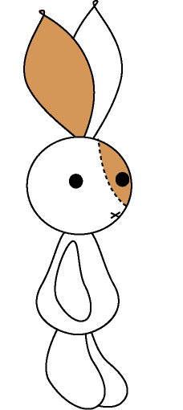

<!doctype html>
<html>
  <head>
	<title>Balloon</title>
    	<script src="js/jquery.min.js"></script>
    	<script src="../jspsych.js"></script>
	<script src="js/snap.svg-min.js"></script>
    	<script src="../plugins/jspsych-text.js"></script>
	<script src="../plugins/jspsych-snap.js"></script>
	<script src="../plugins/jspsych-snap-setup.js"></script>
	<script src="../plugins/jspsych-survey-likert.js"></script>
	<script src="../plugins/jspsych-outcome.js"></script>  
	<script src="../plugins/jspsych-rating.js"></script>
    <link rel="stylesheet" href="../css/jspsych.css"></link>
  </head>
  <body>
    <div id="jspsych-target"></div>
  </body>
  <script>
	  
  
	var trial_reps = 1
	var bust = jsPsych.randomization.shuffle([1,2,3,4,5,6,7,8,9,10,11,12]).pop()
	var reps = 0
	var bal_size = 10
	var n_pumps = 0
	var value = Math.floor(Math.random() * (30-10))+10

	var timeline = []
		
	var inst = {
		type: 'text',
		text: "<div class='left'></img></div>" +
		"<div class='right'><p class='large'><b>Welcome to the balloons game!</b></p><p>In this game, you will help the rabbit to blow up <p><p>balloons by telling her how many times to pump. <p><p>You will be rewarded for each pump you make. <p><p>The amount of reward will change with each balloon. <p><p>For example, one balloon might be worth 12p per pump, <p><p>so if you make four pumps, you would get 48p for that balloon.<p><p>If you pump the balloon too much, it will burst. <p><p>Then you will not get any reward for that balloon. <p><p>The balloon may burst anywhere between 1 and 12 pumps. <p><p>It's totally random!</p></p><b>Press any key to play.</b></p>"
		}
				
	timeline.push(inst)
  
  var block = {
    type: 'text',
    text: function() {
		return "<p>The next balloon is worth <font color = 'red'>" + value + "p</font> for each pump.</p><p>How many pumps would you like to make?</p><p>Press \'space\' to add a pump or \'z\' to place your bet.</p><p><font size=36><font color='red'>" + n_pumps + "</font></font> pumps</p>";
	},
	timing_post_trial: 0,
	choices: [32, 90]
  }

  var pump_loop_node = {
    timeline: [block],
    loop_function: function(data){
      if(jsPsych.pluginAPI.convertKeyCharacterToKeyCode('space') == data[0].key_press){
		if(n_pumps < 12){
			n_pumps = n_pumps + 1;
			}
        return true;
      } else {
	  if((jsPsych.pluginAPI.convertKeyCharacterToKeyCode('z') != data[0].key_press) || (n_pumps == 0)) {
		return true;
		}else{
        return false;
      }}
    }
  }
  
	var setup_trial = {
		type: 'snap-setup',
		timing_post_trial: 0
		}
  
	var snap_trial = {
		type: 'snap',
		size: function(){
		    return bal_size
		}
	}
	
	var loop_node = {
		timeline: [snap_trial],
		loop_function: function(){
		  if(reps + 1 < n_pumps){
			reps = reps+1;
			bal_size = bal_size + 10;
			return true;
		  } else {
			return false;
		  }
		}
	}
	
	var outcome_trial = {
		type: 'outcome',
		size: function(){
			return bal_size + 10
			},
		outcome: function(){
					if(n_pumps < bust){
						return "bank"
					}else{
						return "bust"
					}},
		choices: [80, 90],
		bustSize: function(){return bust}
		}
		


  // defining two different response scales that can be used.
  //var scale_1 = ["Very sad", "Quite sad", "Neither happy nor sad", "Quite happy", "Very happy"];

  var rating_trial = {
      	type: 'rating',
	anchorImages: ['img/img02.bmp','img/img01.bmp']
  };
		
	
	var BART_loop = {
		timeline: [pump_loop_node, setup_trial, loop_node, outcome_trial, rating_trial],
		loop_function: function(data){
			trial_reps += 1;
		  if(trial_reps <= 10){
			
			bust = jsPsych.randomization.shuffle([1,2,3,4,5,6,7,8,9,10,11,12]).pop()
			value = Math.floor(Math.random() * (30-10))+10
			reps = 0
			bal_size = 10
			n_pumps = 0
			
			return true;
		  } else {
			return false;
		  }
		}
	}
	
	timeline.push(BART_loop)
	

  jsPsych.init({
    display_element: $('#jspsych-target'),
    timeline: timeline,
    on_finish: function(){jsPsych.data.displayData(); }
  });

  </script>
</html>
